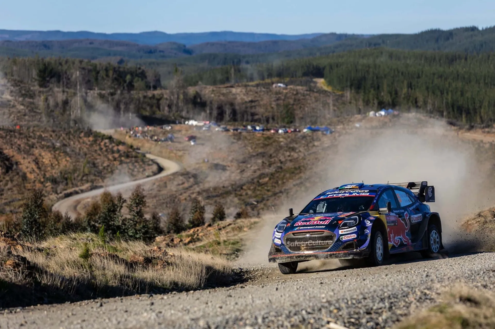
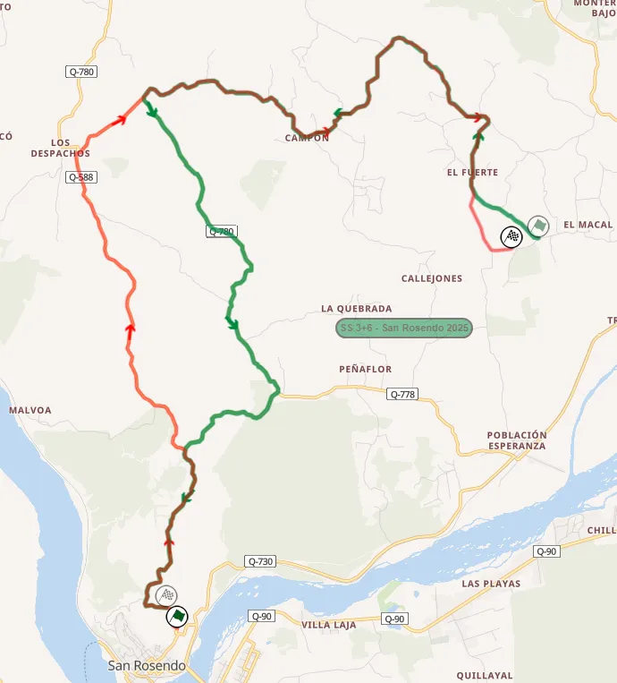
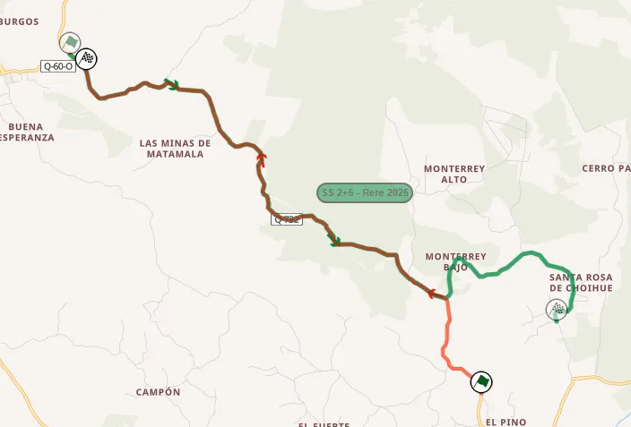
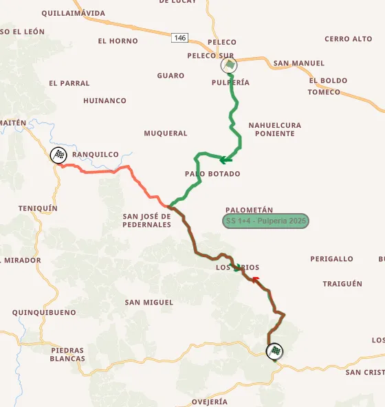

Rally Chile 2026: The Stages
Thumbnail: @ World
Stage Maps: Rally-Maps.com
Rally Chile has made meaningful changes to its itinerary for the first time since 2023, with all of Friday's stages being reversed and with new sections. Another new stage on Sunday means that almost half of the event's route is new for this year.
Thursday
Thursday is the opening day of the rally, only featuring the pre-event Shakedown stage, which is brand new for this year.
Shakedown: San José de Palco - 5.76km
Changes compared to past editions: Brand new stage, never used before in a rally.
Stage description: Rally Chile has a brand new shakedown this year. The scenery is different compared to the stages used in the rally, with the stage itself looking more like something from Rally Mexico or the Acropolis Rally. It is twisty and technical, first climbing uphill for the first 2.3km, before then starting going downhill. The end of the test is very twisty and sinuous.
Friday
The first day of competitive action features three repeated stages, either side of a service in Concepción. All three stages are in the same area as last year's Friday stages, but are run in the opposite direction, with some new sections.
SS1/4 Turquía - 22.94km
Changes compared to past editions: Essentially last year's San Rosendo stage in reverse with two new roads compared to last year.

Turquía (red) compared to last year's San Rosendo (green)
Stage description: The start is on a medium-wide road, that features fast to medium speed corners, with a nice flow. Following a junction at 4.2km, the stage joins a new section. In there, the road becomes very narrow in parts, with many technical stretches, and a mix of fast, flowing and slower corners in one. At 6km, there’s a short section with crests. It widens a bit later, becoming high-speed and flowing, and joins the San Rosendo test again at 11.6km. There, tall banks line the side of the road, and it becomes slower, with the finish being at a new section of stage. Martins Sesks and Sebastien Ogier both fell victim to the banks here in 2024.
SS2/5 Nuevo Rere - 10.76km
Changes compared to past editions: Reversed and with a new start compared to last year's Rere.

The new version of Rere (red) compared to last year's version (green)
Stage description: Rere has been the fastest stage of the event in recent years. This new version of the test starts off on a new road, that is uphill and narrow, and medium-speed to high-speed for the most part. It gets faster again after that, joining last year’s route, and following a pass over a bridge at 3.5km, it enters a nice section with many elevation changes, cambered turns, jumps and crests. After this, it becomes high-speed again, finishing on a mostly narrow road with a big jump at 10.2km. Ott Tanak had a heavy landing here in 2023, declaring it as a dangerous spot at the stage end.
SS3/6 Hualqui - 16.69km
Changes compared to past editions: Reversed and shortened version of SS Pulperia used in the event from 2023. The finish was part of SS Licray in 2019.

Hualqui (red) compared to last year's Pulperia test (green)
Stage description: The start is on a wide and fast road, that features banks alongside in sections. At 10.4km, it continues straight onto the new section, which is narrow and features big elevation changes. It’s mostly flowing, featuring a mix of high-speed and more sinuous sections. Esapekka Lappi crashed out of the rally here in 2023.
Saturday
Saturday's stages remain the exact same for the third year in a row. Just like Friday, the day is comprised of three repeated stages, with a service point in the middle in Concepción. The day's closer, María las Cruces, is the longest of the rally.
SS7/10: Pelún - 15.65km
Stage description: The first part of the stage is technical and sinuous, with many slow and long medium corners, going uphill. It becomes faster after that, with more flowing long corners, before exiting the forest at 8km. Following a tricky downhill hairpin at 9.7km, the stage turns downhill, with a twisty section following, A flat-out straight later, and it becomes twisty and technical again until the finish.
SS8/11 Lota - 25.64km
Stage description: The start is on a medium-wide road, on a deforested area, which eventually becomes very twisty. It gets faster from 4km to 7.5km, interrupted by a slower section at 5.52km. Following a junction at 10km, the stage starts to get slower, before becoming very slow and narrow at 14.2km, as well as very twisty. At 16.9km, it switches up onto a road which is faster and wider initially but becomes twisty again just before the finish. Sebastien Ogier broke his suspension in this section in 2024.
SS9/12 María las Cruces - 28.31km
Stage description: María las Cruces is the longest stage of the rally at 28.31km. Thierry Neuville had the biggest accident of his career here in 2019. The start is on a road which is initially medium wide and technical. There are many long, medium speed corners, which give the stage a nice flow. Following a faster section, it turns onto a different road at 7.2km, via a tight junction. That road is twistier than the previous one and continues like that until the 9.65km mark, when it becomes faster with the spot where Neuville had his off in 2019 following. The stage then again becomes medium speed and technical, just like the start, until about the 14km mark, after which the next five kilometers are high speed, with some flat-out sections. From 21km onwards, the stage is twisty, with many long medium speed corners until the finish.
Sunday
Sunday is the rally's final day, and it's comprised of two repeated stages. Carampangue is new, sharing just a 1.79km stretch with the Rio Lia stage last used in 2023. Bio Bio acts as the rally's Wolf Power Stage, and shares some sections with the María las Cruces and Lota tests.
SS13/15 Carampangue - 26.82km
Changes compared to past editions: The first 1.76km are shared with the Rio Lia stage, which was last used in 2023. Other than that, it's a brand new stage.
Stage description: Brand new stage, only sharing a small section with SS Rio Lia. It starts on a wide and flowing section, featuring slow and medium speed corners, climbing uphill. It gets faster on a more open section starting from 8.4km, remaining quite fast until about the 14km mark. It then starts descending, re-entering the forest at 15.6km, becoming slow and sinuous. It becomes more medium to high-speed from 20km onwards, remaining as such until the finish.
SS14/16 Bio Bio - 8.78km
Changes compared to past editions: The same as in 2023 and 2024, sharing some sections with María las Cruces and Lota.
Stage description: It’s the shortest stage of the event. The first 200m of the stage are also part of the Maria las Cruces test in reverse, with the last 2,4km being used in Lota, in the same direction. The initial getaway is on a technical medium speed road, which becomes wider and faster, remaining the same until the finish. There is a big man-made jump on the stage finish, where Martins Sesks lost his rear wing back in 2024.


Comments